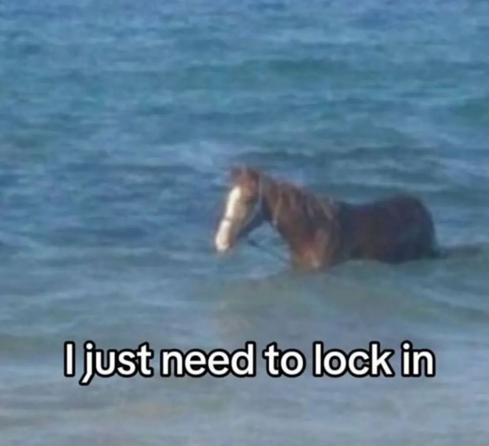
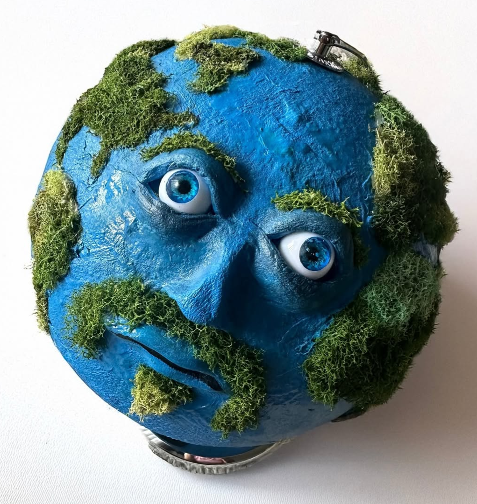
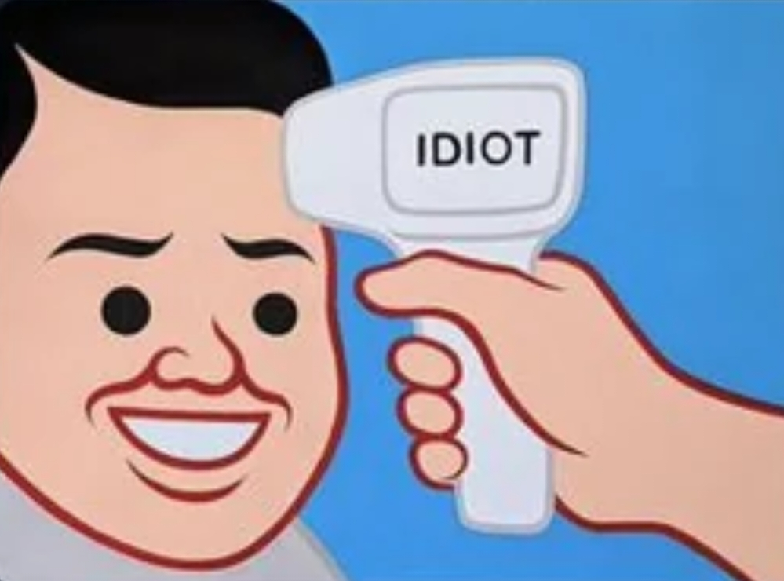

For your viewing pleasure, please gaze upon the curated images below, for they have been organized with the absolute love and compassion that could only be brought out of man just as he started, and then completed, this assignment on the day it was due mere hours before the submission deadline:
The following is an orderd assortment of memes describing my mental state as I worked through the progressive stages of motivation needed to complete this Web Development Assignment. Enjoy :)
My monkly-mantra as I distract myself on my phone knowing that I have to complete my WebDev assignment due tomorrow:
Me going to bed, assuring my laptop that I'll be able to complete the WebDev assignment tomorrow after persuading it that, "I got this, fam."
Me swimming in a sea of documentation, trying to convince myself repeatedly, that, "I just to need to lock in" in order to complete this:

Me taking on the final stages of accomplished-ness as I mold into Mr. Worldwide-big-brain, feeling good about myself:

Final stage of motivation: Me protrayed figuratively, realizing I shouldn't have done this homework at near the last moment (because I'd have more fun with it if I had time.)

This page was last updated on: 13 March, 2025 @ 6:29:59pm EST - Juan L